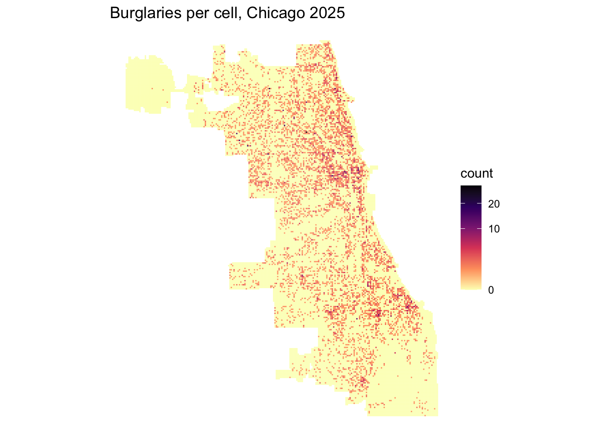
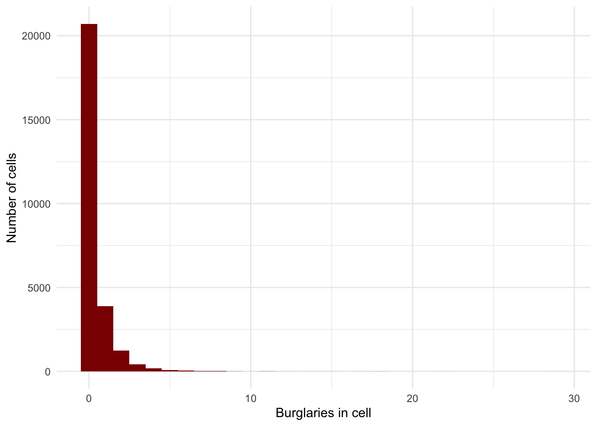
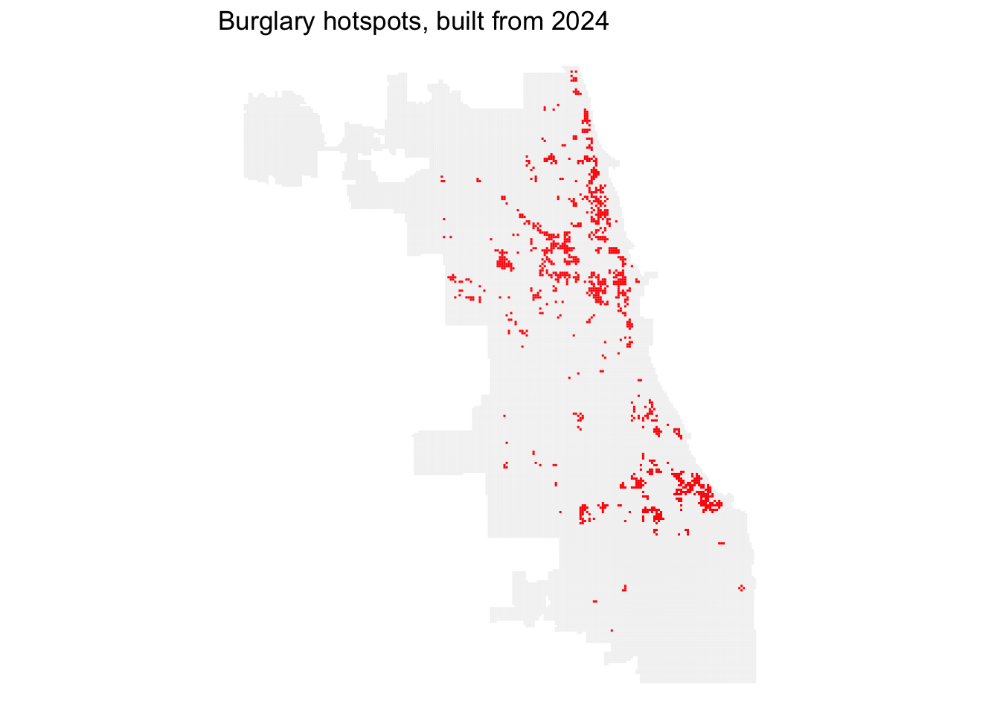
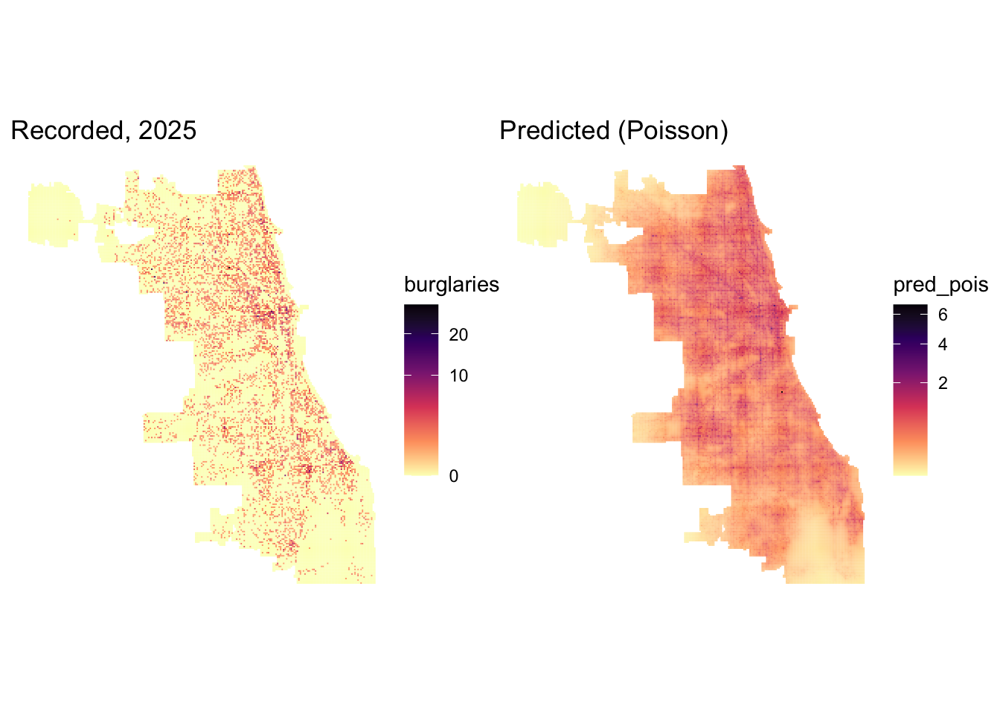
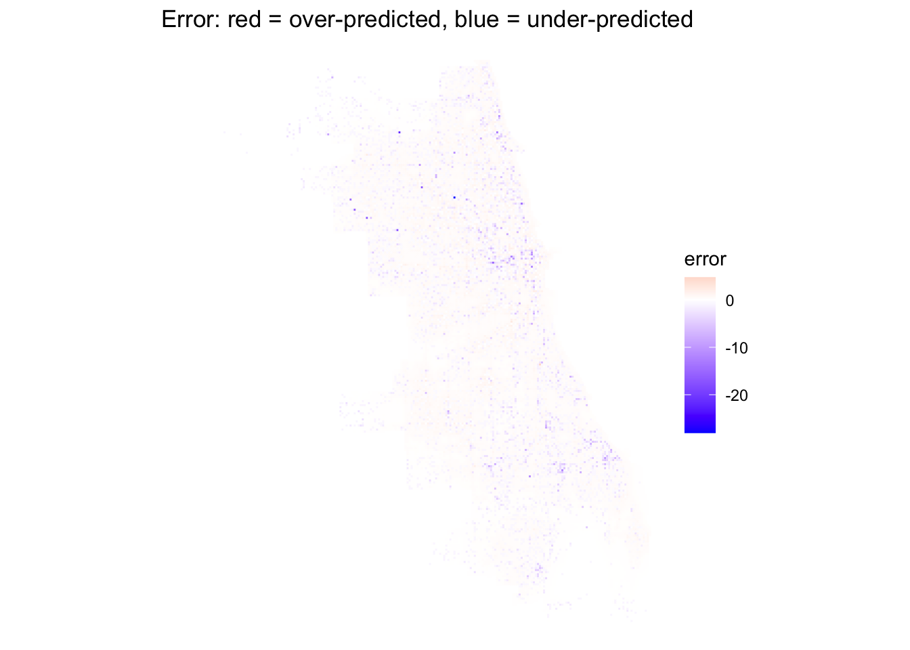

library(tidyverse)
library(sf)
library(spdep)
library(FNN)
library(tigris)
library(patchwork)
options(tigris_use_cache = TRUE)
# Chicago standard: Illinois East State Plane, US feet
crs_chi <- 3435Lab 9: Predicting Burglary in Chicago
MUSA 5080 · Week 9 · Ungraded
What you’re doing today
In class demonstrated some code to construct a burglary model for Philadelphia. Now you rebuild it for Chicago, your new favorite city!
The rules are the same as in the slides:
- 2024 data builds the features
- 2025 burglaries are the outcome
Wherever you see ___, fill it in. Type the code yourself; don’t copy it from the slides.
TipGetting Chicago data
This is the same Socrata portal as the last assignment, so the cheat sheet still applies:
- Put filter values in single quotes. They’re case-sensitive (
'BURGLARY', not'Burglary'). - Always set
$limit. Otherwise Socrata quietly stops at 1,000 rows. - Use
str_squish()on the where-clause, then download to a tempfile beforest_read(). That way you see the real error message if something goes wrong.
Part 0: Setup
Part 1: Get the data
1A. The city boundary
chicago <- places("IL", cb = TRUE, progress_bar = FALSE) %>%
filter(NAME == "Chicago") %>%
st_transform(crs_chi)1B. Burglaries, 2024 and 2025
Here’s 2024, written out in full:
where_2024 <- str_squish("primary_type = 'BURGLARY'
AND year = 2024
AND latitude IS NOT NULL")
url_2024 <- paste0("https://data.cityofchicago.org/resource/ijzp-q8t2.geojson?",
"$where=", URLencode(where_2024, reserved = TRUE),
"&$limit=100000")
tmp <- tempfile(fileext = ".geojson")
download.file(url_2024, tmp, quiet = TRUE)
burg_2024 <- st_read(tmp, quiet = TRUE) %>% st_transform(crs_chi)
nrow(burg_2024)[1] 8396Now write 2025 yourself:
where_2025 <- str_squish("primary_type = 'BURGLARY'
AND year = 2025
AND latitude IS NOT NULL")
url_2025 <- paste0("https://data.cityofchicago.org/resource/ijzp-q8t2.geojson?",
"$where=", URLencode(where_2025, reserved = TRUE),
"&$limit=100000")
tmp <- tempfile(fileext = ".geojson")
download.file(url_2025, tmp, quiet = TRUE)
burg_2025 <- st_read(tmp, quiet = TRUE) %>% st_transform(crs_chi)
nrow(burg_2025)[1] 9667Question 1.1: Is either count exactly 1,000? What would that tell you?
Your answer:
1C. 311 requests, 2024
The 311 dataset is v6vf-nfxy. First, find out what the request types are actually called. Don’t guess the spelling.
params <- c(
`$select` = "sr_type, count(*) AS n",
`$where` = "created_date between '2024-01-01T00:00:00' and '2024-12-31T23:59:59'",
`$group` = "sr_type",
`$order` = "n DESC",
`$limit` = "100"
)
types_url <- paste0("https://data.cityofchicago.org/resource/v6vf-nfxy.csv?",
paste0(names(params), "=",
sapply(params, URLencode, reserved = TRUE),
collapse = "&"))
sr_types <- read_csv(types_url)
sr_types# A tibble: 100 × 2
sr_type n
<chr> <dbl>
1 311 INFORMATION ONLY CALL 685581
2 Aircraft Noise Complaint 343797
3 Graffiti Removal Request 99366
4 Pothole in Street Complaint 51243
5 Abandoned Vehicle Complaint 49988
6 Garbage Cart Maintenance 49121
7 Rodent Baiting/Rat Complaint 45732
8 Tree Trim Request (NO LONGER BEING ACCEPTED) 42834
9 Street Light Out Complaint 39171
10 Tree Debris Clean-Up Request 33951
# ℹ 90 more rowsFind the exact names for abandoned vehicles, street lights out, and graffiti removal in that list. Then pull each one for 2024:
get_311 <- function(type) {
where <- str_squish(paste0("sr_type = '", type, "'
AND created_date between '2024-01-01T00:00:00' and '2024-12-31T23:59:59'
AND latitude IS NOT NULL"))
url <- paste0("https://data.cityofchicago.org/resource/v6vf-nfxy.geojson?",
"$where=", URLencode(where, reserved = TRUE),
"&$limit=200000")
tmp <- tempfile(fileext = ".geojson")
download.file(url, tmp, quiet = TRUE)
st_read(tmp, quiet = TRUE) %>% st_transform(crs_chi)
}
abandoned_cars <- get_311("Abandoned Vehicle Complaint")
light_outages <- get_311("Street Light Out Complaint")
graffiti <- get_311("Graffiti Removal Request")
c(cars = nrow(abandoned_cars), lights = nrow(light_outages), graffiti = nrow(graffiti)) cars lights graffiti
49957 39147 99104 Part 2: The fishnet
Pick your cell size now, before you see any results. The slides used 500 ft for Philadelphia.
cell_size <- 500 # in feet, because EPSG 3435 is in feet
fishnet <- st_make_grid(chicago, cellsize = cell_size, square = TRUE) %>%
st_sf() %>%
st_filter(chicago) %>%
mutate(cell_id = row_number())
fishnet <- fishnet %>%
mutate(burglaries = lengths(st_intersects(fishnet, burg_2025))) # 2025: the outcome
nrow(fishnet)[1] 26611ggplot(fishnet) +
geom_sf(aes(fill = burglaries), color = NA) +
scale_fill_viridis_c(option = "magma", direction = -1, trans = "sqrt") +
labs(title = "Burglaries per cell, Chicago 2025", fill = "count") +
theme_void()
Question 2.1: Why a grid instead of Chicago’s 77 community areas? Give two reasons.
Your answer: A regular grid provides a finer spatial resolution than Chicago’s 77 community areas, allowing us to identify local patterns within neighborhoods. It also uses cells of a consistent size and shape, making spatial comparisons more consistent.
Question 2.2: Why did you pick that cell size? Name one thing that would change if you doubled it.
Your answer: I chose 500 feet to match the scale used in the Philadelphia example and capture local variation. Doubling the cell size to 1,000 feet would quadruple each full cell’s area, generally increasing counts per cell and smoothing local patterns.
Part 3: Look at the outcome first
ggplot(fishnet, aes(burglaries)) +
geom_histogram(binwidth = 1, fill = "darkred") +
labs(x = "Burglaries in cell", y = "Number of cells") +
theme_minimal()
mean(fishnet$burglaries == 0) # share of zeros[1] 0.7781744c(mean = mean(fishnet$burglaries), variance = var(fishnet$burglaries)) mean variance
0.3631581 0.8837445 Question 3.1: What share of cells have zero burglaries? Give two reasons, from the slides, that OLS will struggle here.
Your answer: 77.8 % of cells have zero burglaries. OLS can produce negative predictions for nonnegative counts, and its constant-variance assumption is poorly suited to sparse counts whose variance changes with their expected level.
Question 3.2: Compare the mean and the variance. What does a Poisson model assume about them, and does Chicago meet that assumption?
Your answer: The mean is 0.36, and the variance is 0.88. A Poisson model assumes that the conditional variance equals the conditional mean. If the observed variance is much larger than the mean, this suggests overdispersion, although comparing the overall mean and variance alone does not establish conditional overdispersion.
Part 4: Features from 2024
Build one of each feature type. These are the same four types as in A4.
centroids <- st_centroid(fishnet)
knn_dist <- function(from, to, k) {
nn <- get.knnx(st_coordinates(to), st_coordinates(from), k = k)
rowMeans(nn$nn.dist)
}
# The Loop: State & Madison
loop <- st_sfc(st_point(c(-87.6278, 41.8820)), crs = 4326) %>% st_transform(crs_chi)
fishnet <- fishnet %>%
mutate(
cars_cnt = lengths(st_intersects(., abandoned_cars)), # count in cell
light_nn1 = knn_dist(centroids, light_outages, k = 1), # nearest distance
graffiti_nn3 = knn_dist(centroids, graffiti, k = 3), # kNN distance
loop_mi = as.numeric(st_distance(centroids, loop)) / 5280,
log_light_nn1 = log(light_nn1),
log_graffiti_nn3 = log(graffiti_nn3)
)Question 4.1: Why do we log the distances but not cars_cnt?
Your answer: Logging distances reduces the influence of very large values and allows the effect of an additional foot to diminish with distance. We keep cars_cnt in its original scale to model changes per additional complaint and retain zero counts, since log(0) is undefined.
Part 5: The hotspot feature
Run LISA on 2024 burglaries and keep only the significant High-High cells.
fishnet <- fishnet %>%
mutate(burg_2024 = lengths(st_intersects(., burg_2024)))
nb <- knn2nb(knearneigh(st_coordinates(centroids), k = 8))
lw <- nb2listw(nb, style = "W")
set.seed(5080)
lisa <- localmoran_perm(fishnet$burg_2024, lw, nsim = 499)
fishnet <- fishnet %>%
mutate(quadrant = attr(lisa, "quadr")$mean,
p_value = lisa[, "Pr(folded) Sim"],
hotspot = quadrant == "High-High" & p_value < 0.05)
table(fishnet$hotspot)
FALSE TRUE
25485 1126 ggplot() +
geom_sf(data = fishnet, fill = "grey95", color = NA) +
geom_sf(data = filter(fishnet, hotspot), fill = "red", color = NA) +
labs(title = "Burglary hotspots, built from 2024") +
theme_void()
hot_pts <- centroids[fishnet$hotspot, ]
fishnet <- fishnet %>%
mutate(hotspot_dist_mi = knn_dist(centroids, hot_pts, k = 1) / 5280)Part 6: OLS vs. Poisson
f <- burglaries ~ cars_cnt + log_light_nn1 + log_graffiti_nn3 +
loop_mi + hotspot_dist_mi
ols <- lm(f, data = fishnet)
pois <- glm(f, family = "poisson", data = fishnet)
fishnet <- fishnet %>%
mutate(pred_ols = predict(ols),
pred_pois = predict(pois, type = "response"))
c(negative_ols = sum(fishnet$pred_ols < 0),
negative_pois = sum(fishnet$pred_pois < 0)) negative_ols negative_pois
2231 0 tibble(term = names(coef(pois)),
beta = coef(pois),
exp_beta = exp(coef(pois))) %>%
mutate(across(where(is.numeric), ~ round(.x, 3)))# A tibble: 6 × 3
term beta exp_beta
<chr> <dbl> <dbl>
1 (Intercept) 2.38 10.8
2 cars_cnt 0.006 1.01
3 log_light_nn1 -0.208 0.812
4 log_graffiti_nn3 -0.291 0.748
5 loop_mi -0.007 0.993
6 hotspot_dist_mi -0.709 0.492Part 7: Predicted vs. recorded
p1 <- ggplot(fishnet) + geom_sf(aes(fill = burglaries), color = NA) +
scale_fill_viridis_c(option = "magma", direction = -1, trans = "sqrt") +
labs(title = "Recorded, 2025") + theme_void()
p2 <- ggplot(fishnet) + geom_sf(aes(fill = pred_pois), color = NA) +
scale_fill_viridis_c(option = "magma", direction = -1, trans = "sqrt") +
labs(title = "Predicted (Poisson)") + theme_void()
p1 + p2
fishnet <- fishnet %>% mutate(error = pred_pois - burglaries) # positive = over-predicted
ggplot(fishnet) +
geom_sf(aes(fill = error), color = NA) +
scale_fill_gradient2(low = "blue", mid = "white", high = "red", midpoint = 0) +
labs(title = "Error: red = over-predicted, blue = under-predicted") +
theme_void()
c(rmse_ols = sqrt(mean((fishnet$pred_ols - fishnet$burglaries)^2)),
rmse_pois = sqrt(mean((fishnet$pred_pois - fishnet$burglaries)^2))) rmse_ols rmse_pois
0.9109679 0.8953413 Question 7.1: Where in Chicago does the model over-predict? Under-predict? Describe the pattern in one or two sentences.
Your answer: The model over-predicts burglaries in most mid-west part and under-predicts them in east side. The errors appear clustered in particular areas.
Part 7B: Does it beat last year’s map?
Before any model, departments smoothed last year’s burglaries into a heat map and patrolled the hot parts. Your model has to beat that.
library(spatstat.geom)
library(spatstat.explore)
bb <- st_bbox(fishnet) # use the fishnet's extent, so every cell centroid falls inside the window
win <- owin(xrange = c(bb["xmin"], bb["xmax"]), yrange = c(bb["ymin"], bb["ymax"]))
xy_2024 <- st_coordinates(st_filter(burg_2024, chicago)) # which year? drop points outside the city
kde_2024 <- density(ppp(xy_2024[, 1], xy_2024[, 2], window = win), sigma = 1000) # 1000 ft
xy_cent <- st_coordinates(centroids)
fishnet$kde_2024 <- safelookup(kde_2024, ppp(xy_cent[, 1], xy_cent[, 2], window = win))You’ll probably see a warning about duplicated points. That’s expected: Chicago geocodes crimes to the block, not the address, so many incidents share coordinates.
Now take the top 10% of cells by each method and count how many of 2025’s burglaries fall inside:
fishnet %>%
st_drop_geometry() %>%
mutate(model_top = pred_pois >= quantile(pred_pois, 0.9),
kde_top = kde_2024 >= quantile(kde_2024, 0.9)) %>%
summarize(model = sum(burglaries[model_top]) / sum(burglaries),
kde = sum(burglaries[kde_top]) / sum(burglaries)) model kde
1 0.2668667 0.3046358Question 7B.1: Which method captured more of 2025’s burglaries in its top 10% of cells? By how much?
Your answer: The KDE captured more of 2025’s burglaries in its top 10% of cells: 30.5 % compared with 26.7 %, a difference of 3.8 percentage points.
Question 7B.2: This comparison is rigged in the model’s favor. Explain why. (Hint: which of the two has already seen the 2025 data?)
Your answer: The comparison favors the Poisson model because it was trained and evaluated on the same 2025 burglary counts, while the KDE used only 2024 data. Despite this in-sample advantage, the model still captured fewer burglaries than the KDE.
Question 7B.3: If the model only beats last year’s map by a little, what are you getting in exchange for its extra complexity and its extra sources of bias?
Your answer: In my results, the model actually performed worse than the KDE, so its extra complexity did not improve this measure of performance. It also requires additional data and introduces potential bias from differences in 311 reporting behavior. These results favor the simpler KDE for this task, although both methods should be evaluated on unseen future data.
Optional challenge (no points)
- Fit a negative binomial model with
MASS::glm.nb(), using the same formula. Compare its coefficients and RMSE to the Poisson model’s. Given what you found in Question 3.2, which one do you trust more? - Add one more 311 feature from the
sr_typeslist. Explain why you expect it to predict burglary before you look at whether it does.